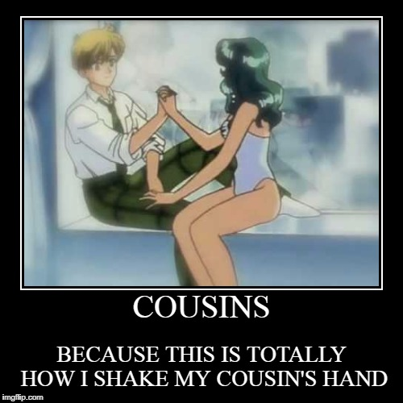
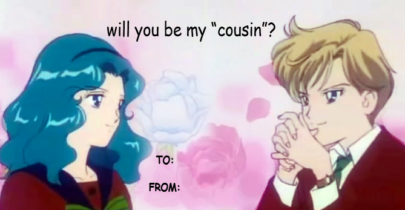

Censorship in Sailor Moon American Version
1. Sailor Uranus and Sailor Neptune were originally girlfriends but were changed to cousins.


2.Some episodes have not been aired in the English version due to being filler episodes.
3. Some characters had their genders changed. There is another LGBT couple but the American version changed one of their gender to the opposite. There is a male character who wore women clothings but the American version changed his gender to female.
4. The final season of Sailor Moon, Sailor Moon Stars, was never released in America.
5. Blood, violence, and death were censored due to being inappropriate for viewers.
6. One of the episodes, the script was changed due to the talk about anti-fat. In the Japanese version, it's saying to starve yourself to be skinny. The American version changed the script by having the quotes "not to starve yourself, eat more healthy food, and avoid junk food."